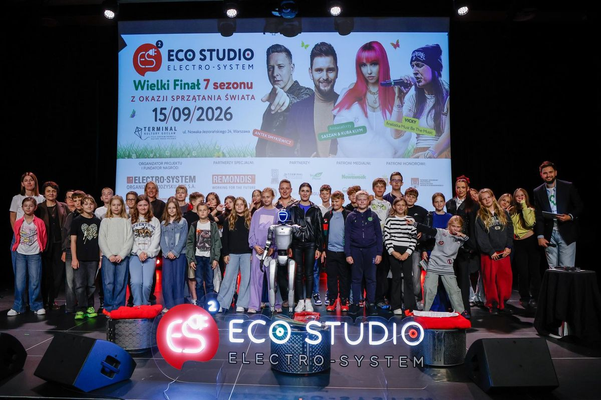
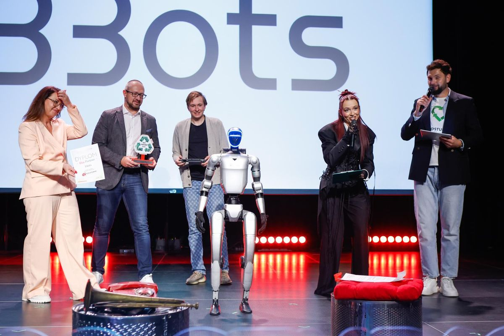

- Startseite
- Referenzen
- Case Study: Eco Studio ELECTRO-SYSTEM
Case Study · Schulprojekt · Warschau
Eco Studio — ein humanoider Roboter beim Finale, über das TVP2 berichtete
Das große Finale der 7. Staffel eines landesweiten Bildungs- und Umweltprojekts für Schulen in Polen. Im Publikum Schülerinnen und Schüler aus dem ganzen Land, auf der Bühne Saszan, Antek Smykiewicz und Vicky, vor Ort das Team des TVP2-Frühstücksfernsehens. Ein Portal schrieb den Roboter direkt in die Überschrift.

Die siebte Staffel eines landesweiten Schulprojekts
Eco Studio ELECTRO-SYSTEM ist ein Bildungs- und Umweltprojekt der polnischen Rücknahmeorganisation für Elektro- und Elektronikgeräte ELECTRO-SYSTEM. Eine Staffel lang sammeln Schulen aus ganz Polen um die Wette Elektroschrott; am Ende steht das große Finale in Warschau — mit Konzerten, Gala und der Bekanntgabe der Siegerschule.
Die siebte Staffel gewann die Grundschule Nr. 5 in Plock: Ihre Schülerinnen und Schüler sammelten 3 280 kg alte Elektro- und Elektronikgeräte. Auf der Bühne des Finales standen Saszan, Antek Smykiewicz und Vicky.
Die Rolle des Roboters: eine Attraktion, die es in die Überschrift schaffte
Unser humanoider Roboter war eine der Attraktionen des Finales — neben den Konzerten und dem offiziellen Teil. Er stand mit den Moderatoren und Finalisten auf der Bühne und war an der Sponsorenwand im Einsatz. Das Publikum: Grundschülerinnen und Grundschüler, also das Publikum, das am stärksten und direktesten reagiert.


Wie gut der Roboter zur Veranstaltung passte, zeigt die Überschrift des Berichts auf dem Portal 4influ.pl: „Das große Finale von Eco Studio ELECTRO-SYSTEM: Musik, Ökologie und ein humanoider Roboter haben junge Menschen verbunden“ (übersetzt). Der Roboter war kein Hintergrund — er stand in der Überschrift gleichberechtigt neben dem Thema des ganzen Projekts.
Reichweite, die man nicht kaufen kann
Über das Finale berichtete vor Ort das Team des TVP2-Frühstücksfernsehens — die Sendung läuft auch auf TVP Polonia. Der Roboter ist in der Folge „Welt aufräumen, Teil 3“ bei 0:35–1:00 und 2:00–2:10 zu sehen. Auch Polskie Radio Program 4 war vor Ort.
Nach der Veranstaltung griffen landesweite Medien und Portale das Thema auf, darunter Onet mit Plejada, Wirtualna Polska, Newsweek und das Portalnetz Nasze Miasto, dazu Stadt- und Gemeindeportale aus Plock, Minsk Mazowiecki, Karczew, Otwock und Sieradz. Das Logo von 33bots stand auf der Sponsorenwand, der Firmenname in einem Teil der Veröffentlichungen.


Eko Partner 2026
In seinem Beitrag auf naszemiasto.pl beschreibt der Veranstalter ELECTRO-SYSTEM den Roboter als eine der Hauptattraktionen des Finales und verleiht 33bots den Titel Eko Partner 2026 (Beitrag des Veranstalters).
Warum das funktioniert
Ein Journalist, der zu einer Schulgala kommt, hat dieselben Motive wie im Jahr zuvor: Bühne, Mikrofon, Urkunden. Ein humanoider Roboter gibt ihm ein Bild, das er sonst nirgends bekommt — und genau dieses Bild landet dann im Beitrag und in der Überschrift.
Für den Veranstalter bedeutet das mehr Reichweite bei gleichem Budget. Für den Sponsor: Präsenz der Marke in Beiträgen, die niemand als Werbung bezahlt hat.
Berichte über das Finale
- 4influ.pl — „Musik, Ökologie und ein humanoider Roboter haben junge Menschen verbunden“
- TVP2-Frühstücksfernsehen — „Welt aufräumen, Teil 3“, Roboter bei 0:35–1:00 und 2:00–2:10
- Plejada — Saszan, Antek Smykiewicz und Vicky beim Finale
- Nasze Miasto — Bericht vom Finale
- Wirtualna Polska — über die Siegerschule aus Plock
- plock.fm — Schülerinnen und Schüler sammelten 3 280 kg Elektroschrott
Häufige Fragen
Ja. Beim Finale von Eco Studio ELECTRO-SYSTEM waren Grundschülerinnen und Grundschüler das Publikum, und der Roboter gehörte zu den Attraktionen, die Medien neben den Konzerten in ihren Überschriften nannten. Bei jüngerem Publikum zählen vor allem die Sicherheitsregeln im Gedränge — darauf achtet unser Operator, der die ganze Zeit beim Roboter ist.
Realistisch ja, eine Garantie ist es aber nicht. Beim Finale von Eco Studio berichtete das Team des TVP2-Frühstücksfernsehens vor Ort, und ein Portal setzte den humanoiden Roboter direkt in die Überschrift, neben Musik und Ökologie. Der Roboter gibt Journalisten ein Bild, das sie auf anderen Veranstaltungen nicht bekommen.
Ja. Das Branding des Roboters — Logo und QR-Code auf der Brust, passend zum Charakter der Veranstaltung — ist im Mietpreis enthalten, ohne Aufpreis.